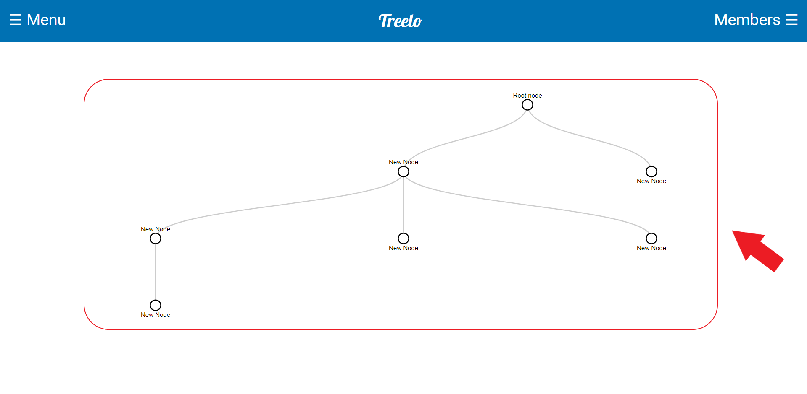

Treelo Quickstart Guide
Welome to Treelo, the tree based organizational software!
Getting started:
- Navigation
- The Treelo page has three main and important components: the Tree View, Tree Navigation Sidebar, the
Members Sidebar, and the Context Menu.
- Tree View: The Tree View is the main focus of the Treelo page. It displays each tree you have
created one tree at a time.

- Tree Navigation Sidebar: The Navigation Sidebar can be opened by clicking the Treelo Menu button
shown below. This sidebar will have buttons corresponding to all of the trees you have created
and have access to. It also contains the options to logout, create a new tree, and view this
quickstart guide.
- Members Sidebar: The members sidebar contains all of the shared views for the current tree that
you are viewing. Simply put, this means that when you share any portion of a tree with an
individual, a button will appear here which, when clicked, will show you what view the person
that you shared with can see.
- The Context Menu is not present until a node within a tree is right-clicked. This action opens
the menu and from there there are many options. These include adding a card, deleting a card,
sharing a tree, and setting a card as the focus node.
- Functionaility:
- Creating your first tree:
- If you are new to Treelo, the first step is to create a tree. To do so navigate to the Treelo
Tree Navigation Bar and click the 'Create a Tree' button located at the bottom of the sidebar as
shown. This opens a popup for creating a new tree. Fill out the information for both the tree
title and description and hit submit. Note: if you do not fill out both
the title and description fields, the tree will not be created. To cancel creation of a tree,
simply hit the cancel button.
- Editing Trees:
- Adding Nodes:
- You have many options when it comes to editing your newly created trees. Firstly, you
can add nodes by right clicking on the node you wish to add a node from. This will open
the Context Menu as described above in the Navigation section of this
guide. From here you can click the Add Node button and a new node
will be added as the child of the selected node.
- Deleting Nodes:
- To delete a created node/card simply open the context menu as described above and click
the Delete Card button.
- Note: if the node/card that you wish to delete is the root of the tree, the entire tree
will be deleted.
- Sharing Trees:
- To share a tree from a certain point, simply open the context menu and click
the SHARE button. This will open the share popup which will prompt
you to input the email of the user which you want to share the tree with.
Hit submit to share the tree and cancel
to close the popup.
- Note: the user that you shared the tree with will only be able to see/edit from the node
at which you shared from. They will not have access to higher level parent nodes
- Setting a Node as the Focus:
- To set a node as the focus, to make the current node the root node for visual purposes,
simply open the Context Menu and click the Set Focus Node button.
This will make the selected node appear to be the root node, thus 'zooming' in on a
section of the tree for better, clearer viewing.
- Editing Node/Card information:
- To edit node/card information simply double click any node. This will open the card
information modal.
- Editiing title/description:
- To edit the title or descrition of a node/card simply click on the
current description/title and a text area will open. From there you can
edit what you wish.
- Note: make sure to click Save Changes
before closing the modal in order to save your changes
- Removing shared users:
- To remove shared users simply find the Members tab within
the